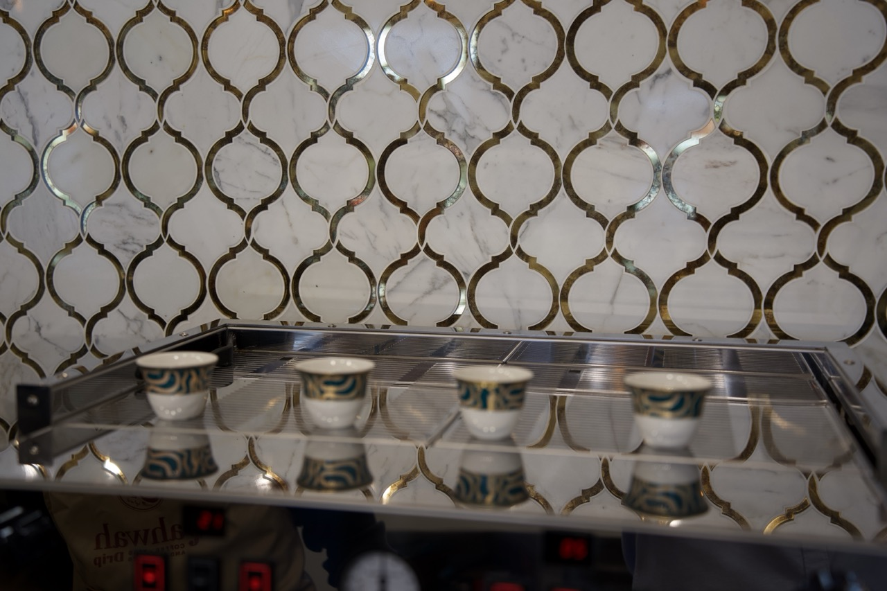
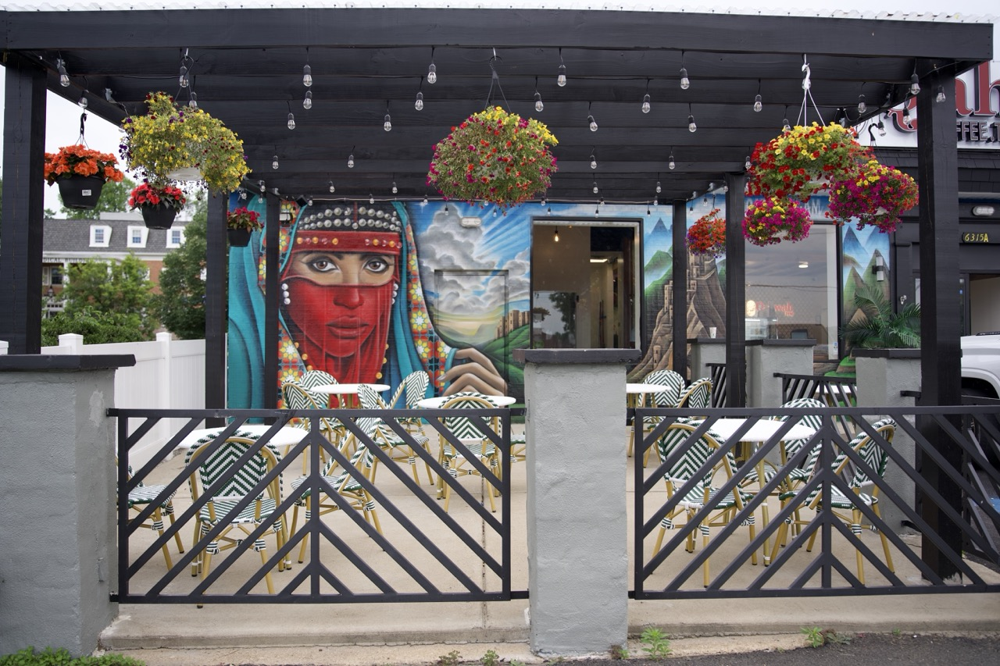
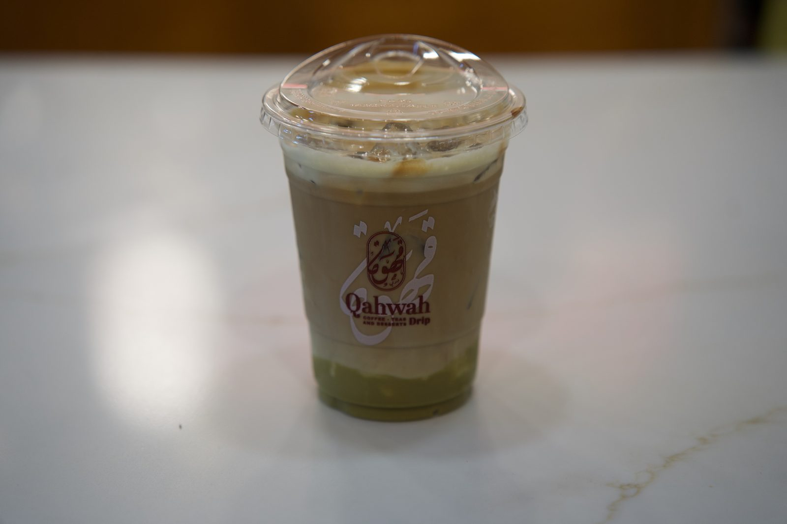
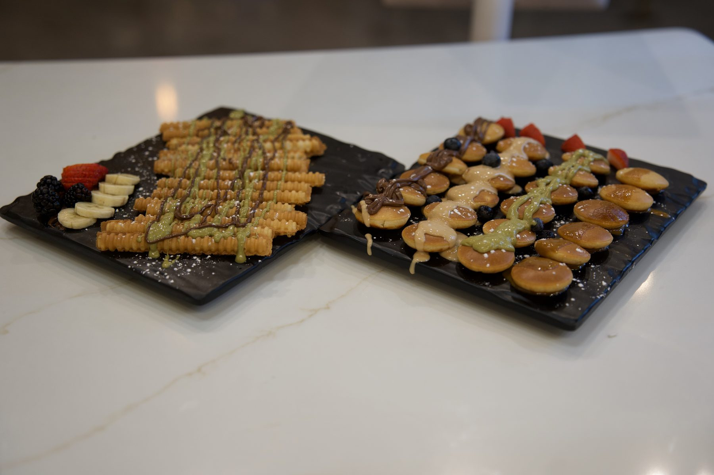
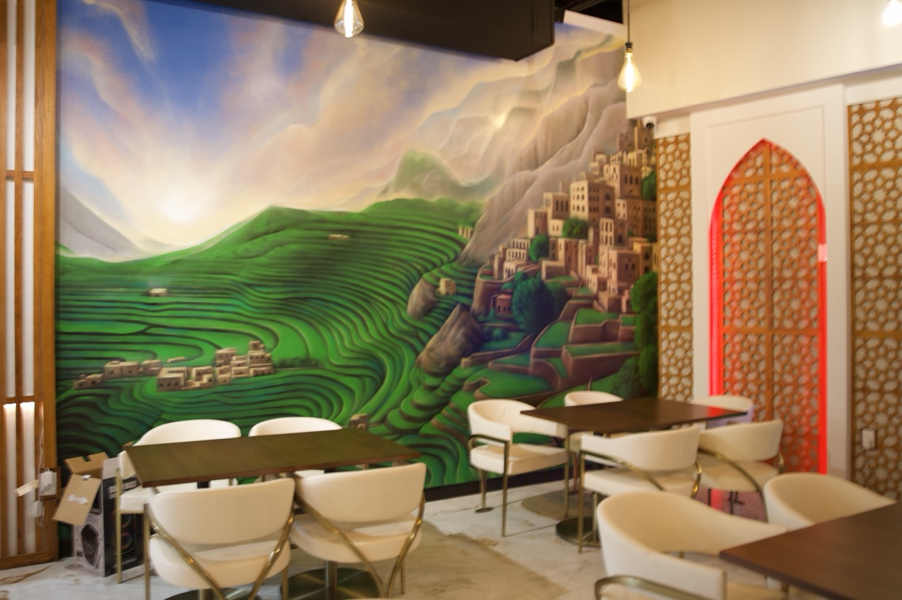

Yemeni Qahwah
Aromatic Yemeni coffee, brewed bright and spiced — the soul of our house.
$4.50

Authentic Yemeni qahwah, specialty espresso, teas & house-made desserts — brewed with heritage and served with warmth.
Qahwah Drip brings the coffee of our homeland to Falls Church. Coffee was first cultivated in the mountains of Yemen centuries ago, and we carry that legacy into every cup — alongside fresh matcha, rich espresso, and house-made sweets, served the way they're meant to be: slowly, and in good company.

Aromatic Yemeni coffee, brewed bright and spiced — the soul of our house.

Smooth espresso, milk and a whisper of cardamom over ice. Our crowd-pleaser.

Stone-ground matcha layered with milk and a swirl of pistachio. Almost too pretty to sip.

It's right there in our name. Crispy churros and pillowy mini-pancakes drizzled with chocolate and pistachio, layered cakes, and Yemeni classics — made fresh and built for sharing.
The perfect companion to your cup.
See the desserts
Our walls hold the terraced highlands of Yemen — where coffee was born and where our family's story begins. From the port of Mokha to the peaks of Haraz, this is the land that gave the world its first cup.
We honor it with traditional recipes, slow rituals, and the hospitality of a Sana'a sitting room.
Read our story"I love the drinks and the cakes — so unique and delicious, like niche perfumes but in food form. The staff are so kind. 10/10 from me."
"The chai with marshmallow was excellent, the desserts were delicious, hospitality was outstanding, and the atmosphere is beautiful."
"Best espresso coffee. Great atmosphere."
A modern Yemeni retreat — gold arabesque, mashrabiya arches and a patio made for lingering.
6315 Leesburg Pike, Ste A
Falls Church, VA 22044
Mon–Thu 8am – 11pm
Fri–Sat 8am – 12am
Sun 9am – 11pm